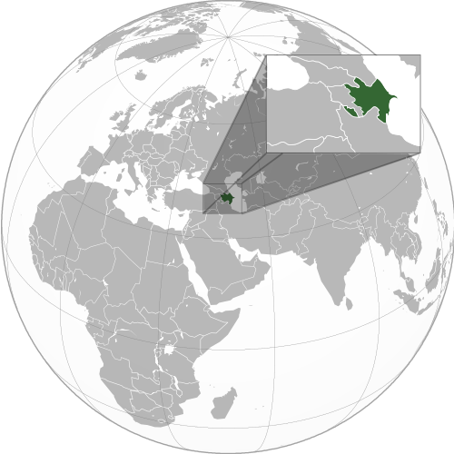
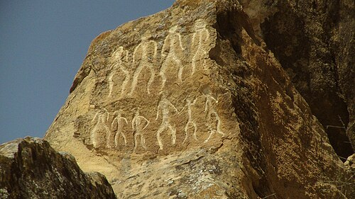

From Wikipedia, the free encyclopedia
This article is about the country. For other uses, see Azerbaijan (disambiguation).
Azerbaijan,[a]officially the Republic of Azerbaijan,[b] is a transcontinental and landlocked country at the boundary of Western Asia and Eastern Europe.[c] It is a part of the South Caucasus region and is bounded by the Caspian Sea to the east, Russia's republic of Dagestan to the north, Georgia to the northwest, Armenia and Turkey to the west, and Iran to the south. Baku is the capital and largest city.
The territory of what is now Azerbaijan was ruled first by Caucasian Albania and later by various Persian empires. Until the 19th century, it remained part of Qajar Iran, but the Russo-Persian wars of 1804–1813 and 1826–1828 forced the Qajar Empire to cede its Caucasian territories to the Russian Empire; the treaties of Gulistan in 1813 and Turkmenchay in 1828 defined the border between Russia and Iran. [12][13] The region north of the Aras was part of Iran until it was conquered by Russia in the 19th century,[14][15] where it was administered as part of the Caucasus Viceroyalty..
By the late 19th century, an Azerbaijani national identity emerged, and the Azerbaijan Democratic Republic proclaimed its independence from the Transcaucasian Democratic Federative Republic in 1918, a year after the Russian Empire collapsed, and became the first secular democratic Muslim-majority state. In 1920, the country was conquered and incorporated into the Soviet Union as the Azerbaijan SSR. The modern Republic of Azerbaijan proclaimed its independence on 30 August 1991,[16][17] shortly before the dissolution of the Soviet Union. In September 1991, the ethnic Armenian majority of the Nagorno-Karabakh region formed the self-proclaimed Republic of Artsakh, which became de facto independent with the end of the First Nagorno-Karabakh War in 1994, although the region and seven surrounding districts remained internationally recognized as part of Azerbaijan.[18][19][20][21] Following the Second Nagorno-Karabakh War in 2020, the seven districts and parts of Nagorno-Karabakh were returned to Azerbaijani control.[22] An Azerbaijani offensive in 2023 ended the Republic of Artsakh and resulted in the expulsion of Nagorno-Karabakh Armenians.
Further information: Atropatene, Caucasian Albania, and Azerbaijan (toponym) The term Azerbaijan derives from Atropates,[28][29] a Persian[30][31] satrap under the Achaemenid Empire who was reinstated as the satrap of Media under Alexander the Great.[32][33] The original etymology of this name is thought to have its roots in the once-dominant Zoroastrianism. In the Avesta's Frawardin Yasht ("Hymn to the Guardian Angels"), there is a mention of âterepâtahe ashaonô fravashîm ýazamaide, which translates from Avestan as "we worship the fravashi of the holy Atropatene".[34] The name "Atropates" is the Greek transliteration of an Old Iranian, probably Median, compounded name with the meaning "Protected by the (Holy) Fire" or "The Land of the (Holy) Fire".[35] The Greek name was mentioned by Diodorus Siculus and Strabo. Over the span of millennia, the name evolved to Āturpātākān (Middle Persian), then to Ādharbādhagān, Ādhorbāygān, Āzarbāydjān (New Persian) and present-day Azerbaijan.[36] The name Azerbaijan was first adopted by the government of Musavat in 1918[37] after the collapse of the Russian Empire, when the independent Azerbaijan Democratic Republic was established. Until then, the designation had been used exclusively to identify the adjacent region of contemporary northwestern Iran,[38][39][40][41] while the area of the Azerbaijan Democratic Republic was formerly referred to as Arran and Shirvan.[42] On that basis Iran protested the newly adopted country name.[43] During Soviet rule, the country was also spelled in Latin from the Russian transliteration as Azerbaydzhan (Russian: Азербайджа́н).[44] The country's name was also spelled in Cyrillic script from 1940 to 1991 as Азәрбајҹан.
Main article: History of Azerbaijan
 Flag
Flag
 Emblem
Emblem
Anthem:
Azərbaycan Respublikasının Dövlət himnidir
"State Anthem of the Republic of Azerbaijan"

The earliest evidence of human settlement in the territory of Azerbaijan dates back to the late Stone Age and is related to the Guruchay culture of Azykh Cave. [45] Early settlements included the Scythians during the 9th century BC.[35] Following the Scythians, Iranian Medes came to dominate the area to the south of the Aras river.[33] The Medes forged a vast empire between 900 and 700 BC, which was integrated into the Achaemenid Empire around 550 BC.[46] The area was conquered by the Achaemenids leading to the spread of Zoroastrianism.[47]
 |
Petroglyphs in Gobustan National
Park dating back to the 10th
millennium BC indicating a thriving culture
The Sasanian Empire turned Caucasian Albania into a vassal state in 252, while King Urnayr officially adopted Christianity as the state religion in the 4th century.[48] Despite Sassanid rule, Caucasian Albania remained an entity in the region until the 9th century, while fully subordinate to Sassanid Iran, and retained its monarchy. Despite being one of the chief vassals of the Sasanian emperor, the Albanian king had only a semblance of authority, and the Sasanian marzban (military governor) held most civil, religious, and military authority.[49]
The pre-Turkic population spoke several Indo-European and Caucasian languages, among them Armenian[52][53][54][55][56] and an Iranian language, Old Azeri, which was gradually replaced by a Turkic language, the early precursor of the Azerbaijani language of today.[57] Some linguists have also stated that the Tati dialects of Iranian Azerbaijan and the Republic of Azerbaijan, like those spoken by the Tats, are descended from Old Azeri.[58][59] Locally, the possessions of the subsequent Seljuk Empire were ruled by Eldiguzids, technically vassals of the Seljuk sultans, but sometimes de facto rulers themselves. Under the Seljuks, local poets such as Nizami Ganjavi and Khaqani gave rise to a blossoming of Persian literature in the region.[60][61]
Shirvanshahs, the local dynasty of Arabic origin that was later Persianized, became a vassal state of Timurid Empire of Timur and assisted him in his war with the ruler of the Golden Horde Tokhtamysh. Following Timur's death, two independent and rival Turkoman states emerged: Qara Qoyunlu and Aq Qoyunlu. The Shirvanshahs returned, maintaining for numerous centuries to come a high degree of autonomy as local rulers and vassals as they had done since 861. In 1501, the Safavid dynasty of Iran subdued the Shirvanshahs and gained its possessions. In the course of the next century, the Safavids converted the formerly Sunni population to Shia Islam,[62][63][64] as they did with the population in what is modern-day Iran.[65] The Safavids allowed the Shirvanshahs to remain in power under Safavid suzerainty until 1538, when Safavid King Tahmasp I completely deposed them and made the area into the Safavid province of Shirvan. The Sunni Ottomans briefly managed to occupy present-day Azerbaijan as a result of the Ottoman–Safavid War of 1578–1590; by the early 17th century, they were ousted by Safavid Iranian ruler Abbas I. In the wake of the demise of the Safavid dynasty, Baku and its environs were briefly occupied by the Russians as a consequence of the Russo-Persian War of 1722–1723. Remainder of present Azerbaijan was occupied by the Ottomans from 1722 to 1736.[66] Despite brief intermissions such as these by Safavid Iran's neighboring rivals, the land remained under Iranian rule from the earliest advent of the Safavids up to the course of the 19th century.[67][68]